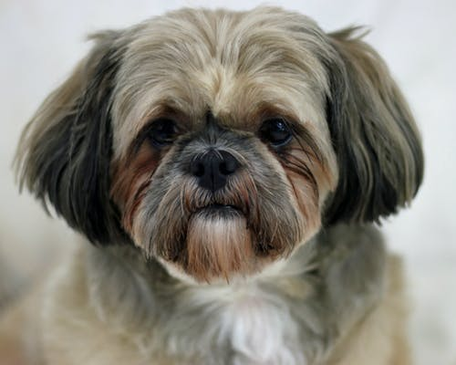

Shih Tzu Dogs
A Shih Tzu dog is a toy dog breed developed in Tibet. They are small dogs which usually will weigh 9-18 pounds. They are oftentimes considered show dogs and can have anywhere from short hair to very long hair, depending on the preference of the owner. Most Shih Tzus have a underbite and small face. Their coat can generally come in any color seen in other dog breeds, but most are either white or black. The name is chinese for "Lion Dog" since it looks similar to depictions of lion in early chinese art.